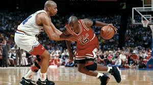

Bienvenidos ventajas y desventajas del baloncesto

Ventajas y Desventajas de Practicar Baloncesto
El baloncesto es un deporte muy popular en todo el mundo, y su práctica ofrece una variedad de beneficios y desventajas que deben ser considerados. A continuación, se presentan las principales ventajas y desventajas de jugar al baloncesto.Ventajas del Baloncesto
Mejora física: La práctica regular del baloncesto es un excelente ejercicio cardiovascular que mejora la resistencia, la agilidad y la fuerza muscular. Correr, saltar y lanzar el balón contribuyen a una mejor condición física general. Desarrollo de habilidades motoras: Jugar al baloncesto mejora la coordinación y las habilidades motoras. Las acciones de driblar, pasar y lanzar requieren precisión y rapidez mental, lo que se traduce en un mejor desarrollo físico. Trabajo en equipo: El baloncesto es un deporte colectivo que fomenta la cooperación y la comunicación entre los jugadores. Estas habilidades son valiosas no solo en la cancha, sino también en situaciones cotidianas como el trabajo o la escuela. Disciplina y compromiso: Participar en un equipo de baloncesto enseña valores como la responsabilidad, la puntualidad y el compromiso. Estos aspectos son fundamentales para el desarrollo personal. Interacción social: Jugar al baloncesto permite crear amistades duraderas y fortalecer la camaradería entre los miembros del equipo, lo que puede enriquecer la vida social de los jugadores.Desventajas del Baloncesto
Riesgo de lesiones: El baloncesto conlleva un alto riesgo de lesiones, que pueden variar desde esguinces y distensiones hasta fracturas y lesiones en la rodilla. La naturaleza física del juego aumenta estas posibilidades. Compromiso de tiempo: La práctica del baloncesto requiere una inversión significativa de tiempo, incluyendo entrenamientos y partidos. Esto puede interferir con otras responsabilidades personales o académicas. Costos económicos: Unirse a un equipo implica gastos relacionados con el equipamiento (zapatillas, ropa deportiva), así como posibles costos por viajes y tarifas de inscripción en ligas o torneos. Presión competitiva: La competitividad inherente al baloncesto puede generar altos niveles de estrés y ansiedad. La presión por rendir bien o asegurar un lugar en el equipo puede afectar negativamente el bienestar mental de los jugadores. Violencia y rivalidades: En ocasiones, el baloncesto puede desencadenar comportamientos violentos entre aficionados o jugadores, lo que puede llevar a situaciones peligrosas tanto dentro como fuera de la cancha. En resumen, practicar baloncesto ofrece múltiples beneficios físicos, emocionales y sociales, pero también conlleva riesgos significativos. Es importante considerar estos factores al decidir participar en este deporte.